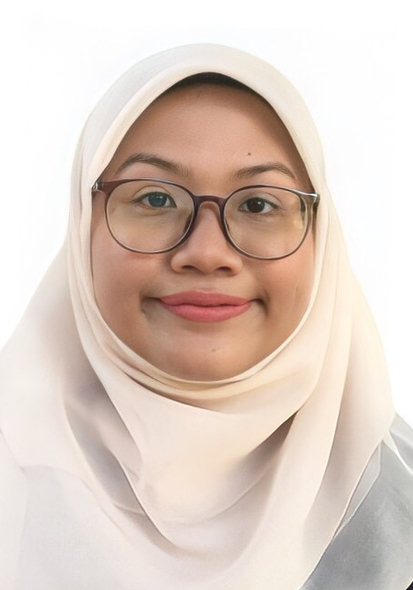

SOFIA BATRISYIA BINTI MOHAMAD FARIS
Current Address:
Multimedia University, Persiaran Multimedia
Cyberjaya 63100
Selangor
Permanent Address:
Lot 91, Kampung Darat Benta,
Kedawang, 07000 Langkawi,
Kedah Darul Aman
E-mail: 1211111880@student.mmu.edu.my
Personal Skills
Language Proficiency:
- Bahasa Melayu (Advanced)
- English (Advanced)
Tertiary
Undergraduate
Foundation in Information Technology, Faculty of Computing & Informatics (FCI),
Multimedia University, Cyberjaya, Selangor.
Secondary
Pure Science Stream, Maktab Rendah Sains Mara, Langkawi, Kedah.
Virtual Career Talk, Muafakat MRSM Langkawi, Online Learning, January 2021.
2-day of programme to introduce students to the right career path.
Xanthrons Camp Batch, Coordinator of Form 4 and MFLS Team, MRSM Langkawi, 2020.
3-day of programme with objective to learn multiple self skills.
Inside-Out Camp, Coordinator of Form 4, MRSM Langkawi, 2020.
3-day programme with objective to improve the unity among the batchmates.
UniKL Giveback Programme, Coordinator of Form 3, MRSM Langkawi, 2019.
3-day of programme to learn more about Information Technology (IT).
Activities and Involvements
- Additional Mathematics XYC, Xcellent Youth Club, MRSM Langkawi, 2021-2022.
- Secretary, Indoor Games Club, MRSM Langkawi, 2021.
- Resource Centre Assistant (RCA), Student Leadership Organisation, MRSM Langkawi, 2019.
- Food and Beverages Bureau, Student Representative Council, MRSM Langkawi, 2021.
- Principal Award, MRSM Langkawi, 2020-2021.
- School Representative, Olympiad Mathematics (National Level), Online Learning, 2021.
- Chemistry National Quiz, MRSM Langkawi, November 2020.